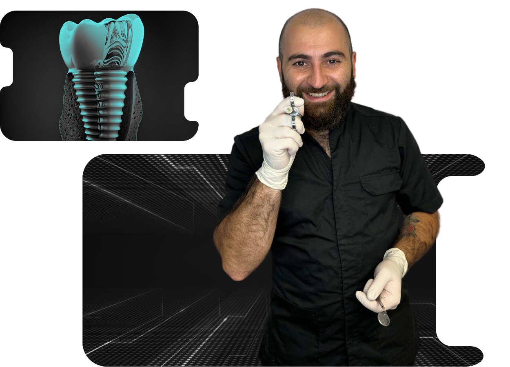
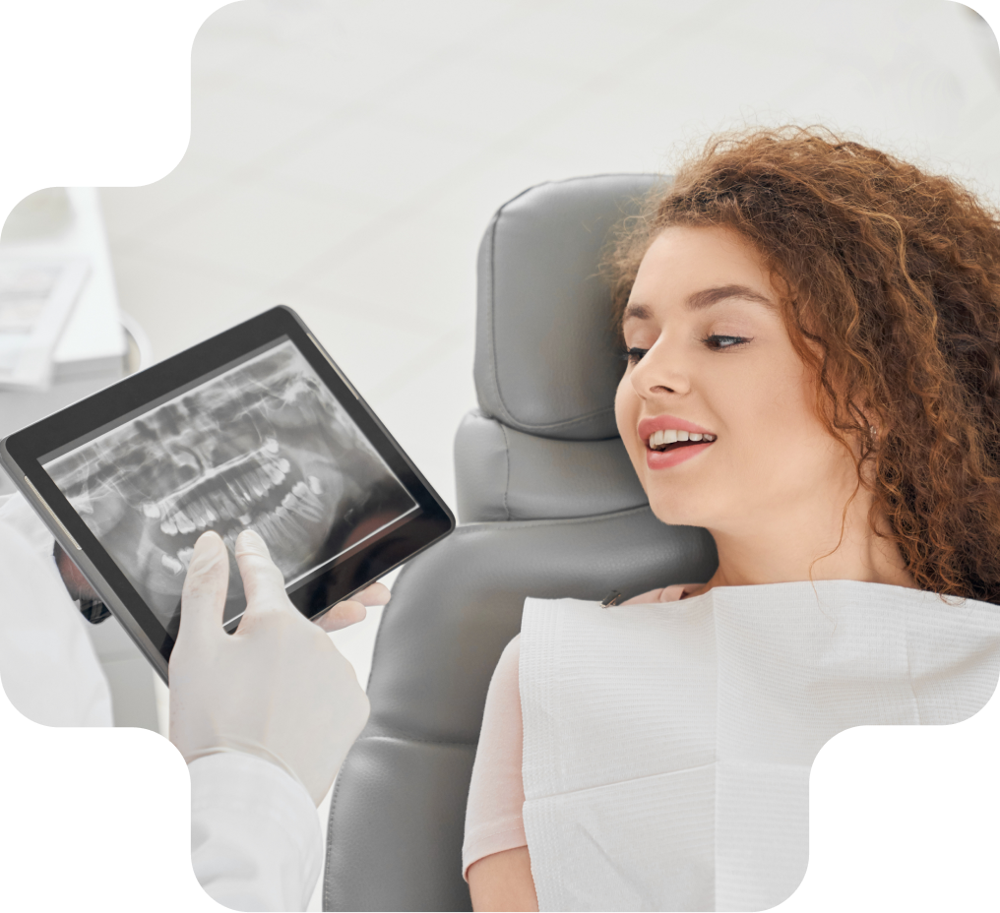
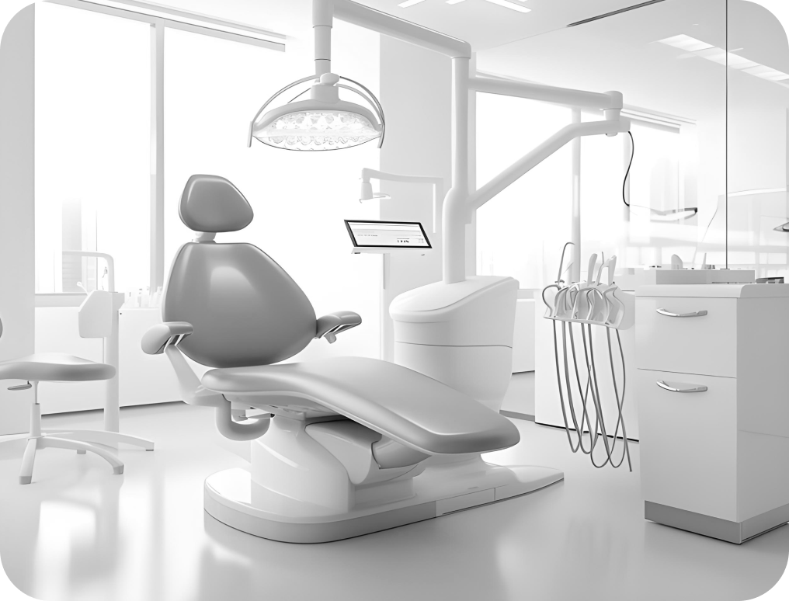
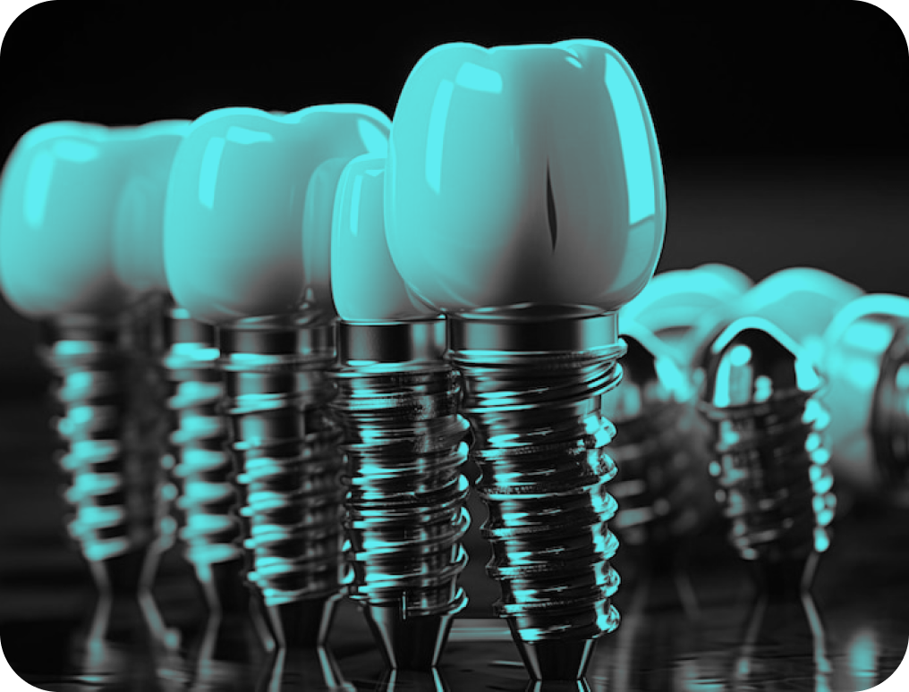
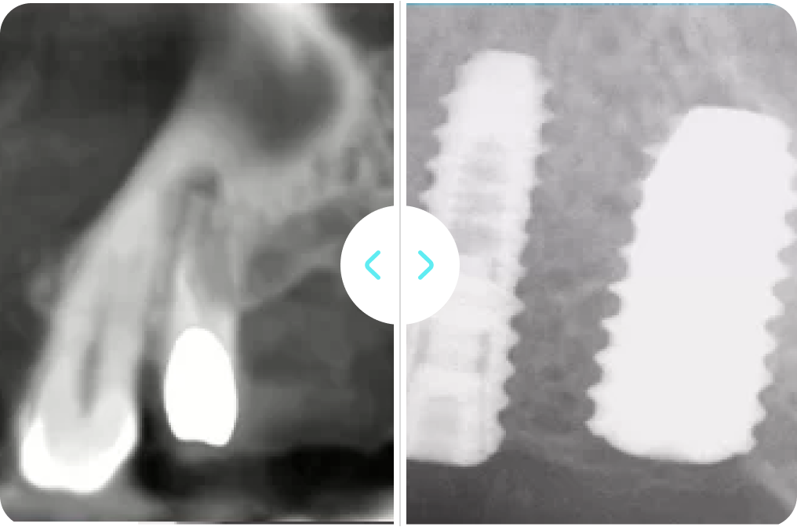
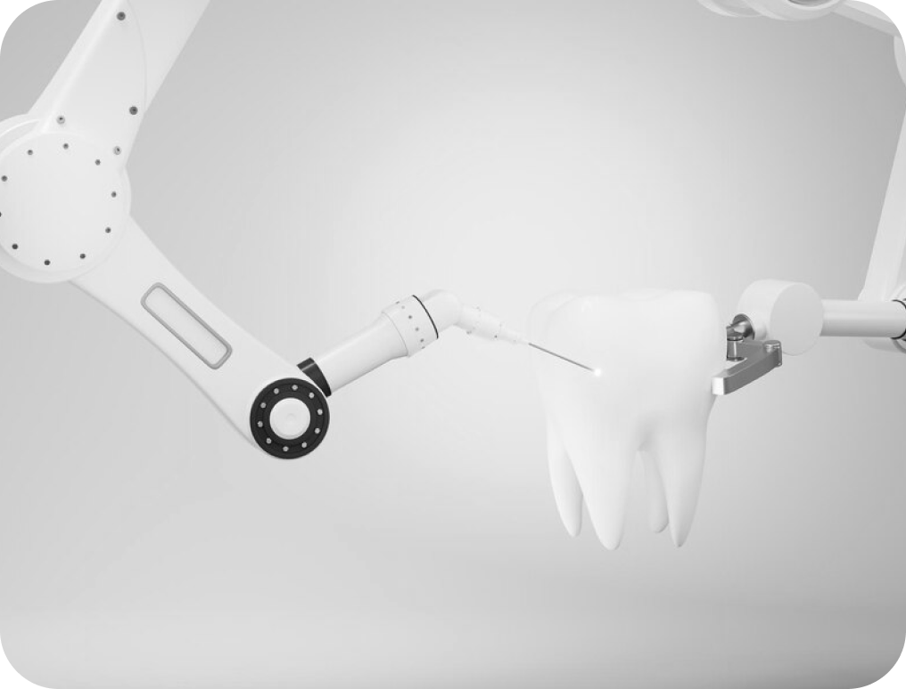
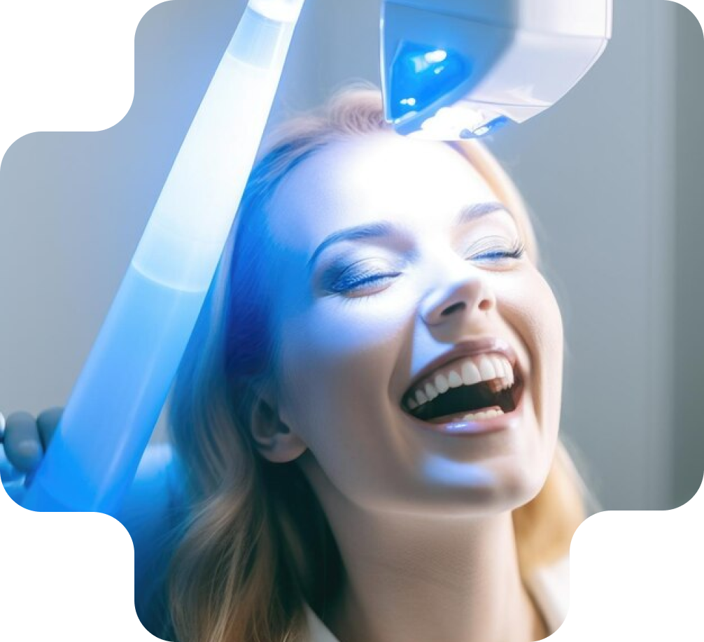

В стоматології Futurum Dentistry вартість імплантації зубів становить 25 000 гривень. Ціна
включає в себе вартість самої процедури імплантації на суму 15 000 гривень та коронки на суму 10
000 гривень, яка закріплюється на імплантаті. При цьому, ціна імплантації зуба може змінюватись
залежно від складності процедури та використаних матеріалів, але пацієнти можуть бути впевнені, що
віддають гроші за високоякісні послуги та професійне обслуговування висококваліфікованим
персоналом.

Імплантація зубів — найкраще рішення для відновлення втраченого зуба!
Імплантація зубів є заміною зубних коренів за допомогою зубних імплантів. Вони забезпечують міцну
основу для фіксованих (постійних) або зйомних замінних зубів, які зроблені відповідно до ваших
природних зубів. Імплант являє собою тіло, яке фіксується в кістки щелепи, і заміщає коріння
втрачених зубів, дозволяючи згодом провести відновлення зубного ряду.
Імпланти можуть дати вам цілісний, функціональний зуб, майже такий самий хороший, як і справжній.
Він складаються з титанового штифта, хірургічно вставленого в щелепу, і порцелянової або
композитної коронки, встановленої зверху. Наш організм не помічає титан, тому кісткова тканина
проростає в мікропори імплантату, за рахунок чого і відбувається «приживлення» або по-науковому
«Остеоінтеграція».

Ним можна замінити лише один зуб або кілька, поєднуючи їх із індивідуальними протезами, такими як
коронки чи мости.
Зубні імпланти дуже зручні та прості в обслуговуванні. Біосумісний матеріал зливається з
тканинами вашого тіла, забезпечуючи життєво важливу стимуляцію вашої щелепи і зберігаючи молодий
вигляд обличчя. Імплантати мають дуже високий рівень успішності — близько 98%.
Імплантація зубів — переваги:
Покращений зовнішній вигляд. Зубні імплантати виглядають і відчуваються як власні зуби. І
оскільки вони призначені для зрощення з кісткою, стають постійними.
Поліпшення мовлення. З погано підігнаними протезами зуби можуть прослизати в роті, змушуючи
вас бурмотіти або не чітко вимовляти слова. Зубні імплантати дозволяють говорити, не хвилюючись,
що зуби можуть зісковзнути.

Виробники зубних імплантів
У світі зареєстровано близько 2000 компаній, які надають зубні імпланти, Наша клініка працює з
трьома категоріями імплантатів:
1. «Bauers Implant» — це імпланти європейської якості й завдяки тому, що вони виробляються в
Україні — вони більш доступні закордонних аналогів. Вартість постановки такого імплантату у нас
становить 190 Євро.
2. Osstem — імплантати, які виробляються в Південній Кореї. Компанія займає п’яту сходинку у
всесвітньому рейтингу компаній-виробників імплантів, що говорить про високу якість і популярність
серед лікарів усього світу. Його вартість — 280 Євро.
3. Straumann — компанія заснована 1954 році у Швейцарії, що стоїть біля витоків імплантології.
Світовий лідер серед виробників імплантів. Постановка імпланта преміум якості у нас коштує 500
євро.

Для постановки імплантату в заплановане положення ми найчастіше використовуємо навігаційний
шаблон — це капа яка не дозволяє доктору зміститися ні на один міліметр в сторону, а це дуже
важливо, коли працюєш поблизу нерва або гайморової пазухи.
Вартість навігаційного хірургічного шаблону залежить від вибору імпланта і їх кількості і в
середньому становить 130 євро.
Для постановки імпланта необхідні умови, а саме — достатній обсяг кісткової тканини і ясен. У
випадках, коли умов недостатньо — необхідна процедура з нарощування кістки або ясен (аугментація).
Вартість цієї процедури дуже сильно варіюється і залежить від обсягу, який необхідно додати до
обраної методики аугментації. Вартість становить від 100 до 300 євро.

Як проходить процедура імплантація зубів?
Імплантація зубів передбачає розробку індивідуального плану лікування. Він відповідає вашим
особливим потребам і складається стоматологом-професіоналом, який має спеціальну підготовку та
досвід у хірургії порожнини рота та реставраційній стоматології. Такий підхід забезпечує
скоординовану допомогу на основі варіанту імплантату, який найкраще підходить для вас.
Далі в кісткову лунку відсутнього зуба встановлюють імплантат кореня зуба, який представляє собою
невеликий титановий штифт. У міру загоєння щелепна кістка росте навколо імплантованого металевого
стовпа, надійно закріплюючи його в щелепі. Процес загоєння може тривати від шести до дванадцяти
тижнів.

Після того, як імплантат з’єднається з кісткою щелепи, до нього прикріплюється невеликий
з’єднувальний штифт, який називається абатментом, щоб надійно утримувати новий зуб. Щоб зробити
новий зуб або зуби, стоматолог робить зліпок і створює модель вашого прикусу (яка фіксує всі зуби,
їх тип і розташування). Новий зуб або зуби засновані на цій моделі. Потім до абатмента
прикріплюють замінний зуб, який називається коронкою.
Замість однієї або кількох окремих коронок деякі пацієнти можуть мати кріплення на імплантаті,
які утримують і підтримують знімний протез.
Ваш стоматолог також підбере колір нових зубів відповідно до ваших природних. Оскільки імплантат
закріплений всередині щелепної кістки, замінні зуби виглядають, відчуваються та функціонують так
само, як ваші власні природні зуби.
Наскільки болюча імплантація зубів?
Більшість людей, які отримали зубні імплантати, кажуть, що процедура не викликає
дискомфорту. Під час процесу може використовуватися місцева анестезія, і більшість
пацієнтів повідомляють, що імплантати викликають менший біль, ніж видалення зуба.
Після встановлення зубного імплантату можливі легкі неприємні відчуття, які можна лікувати
безрецептурними знеболюючими препаратами.

Як доглядати за
зубними імплантатами?
Зубні імплантати вимагають такого ж догляду, як і справжні зуби, включаючи чищення, використання
зубної нитки, полоскання антибактеріальним ополіскувачем для рота та регулярні стоматологічні
огляди.
Для детальної консультації звертайтеся до нашої стоматологічної клініки Futurum Dentistry, за
телефонами:
+38 096 023 01 42 (м. Олімпійська)
+38 050 023 01 45 (м. Васильківська)